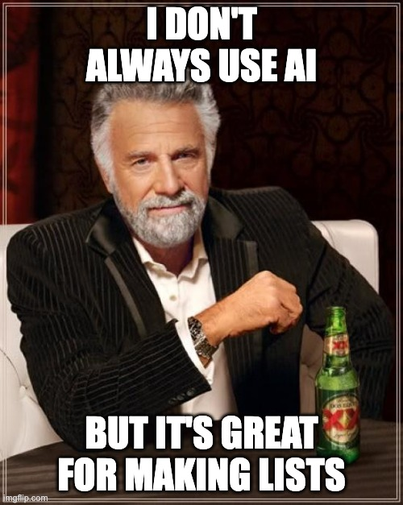

import plotly.graph_objects as go
# Define the data
labels = [
"Energy",
"Generation", "Storage", "Transmission",
"Fossil", "Renewable", "Nuclear",
"Short-term", "Long-term",
"Grid Infrastructure", "Efficiency", "Energy Conversion",
"Solar", "Wind", "Hydro", "geothermal", "biomass", "tidal",
"Oil","Gas","Coal",
"Lithium-ion batteries", "Supercapacitors", "Pumped hydro storage", "Compressed Air Energy Storage",
"Hydrogen storage", "Flow batteries", "Power-to-Gas", "Cryogenic energy storage",
]
parents = [
"",
"Energy", "Energy", "Energy",
"Generation", "Generation", "Generation",
"Storage", "Storage",
"Transmission", "Transmission", "Transmission",
"Renewable", "Renewable", "Renewable", "Renewable", "Renewable", "Renewable",
"Fossil","Fossil","Fossil",
"Short-term", "Short-term", "Short-term", "Short-term",
"Long-term", "Long-term", "Long-term", "Long-term"
]
# Update values to represent market share (these are example values, adjust as needed)
values = [
100, # Energy (total)
69, 30, 1, # Generation, Storage, Transmission
65, 27, 8, # Fossil, Renewable, Nuclear
12.5, 37.5, # Short-term, Long-term
7, 2.5, 2.5, # Grid Infrastructure, Efficiency, Energy Conversion
16, 20, 40, 8, 15, 1, # Solar, Wind, Hydro, Geothermal, Biomass, Tidal
25, 35, 45, # Oil, Gas, Coal
38.5, 1.5, 12.5, 2.5, # Lithium-ion, Supercapacitors, Pumped hydro, Compressed Air
22.5, 12.5, 12.5, 2.5, # Hydrogen, Flow batteries, Power-to-Gas, Cryogenic
]
# Create the sunburst chart
fig = go.Figure(go.Sunburst(
labels=labels,
parents=parents,
values=values,
))
# Update the layout
fig.update_layout(
title="Energy Sector Sunburst Chart",
width=800,
height=800,
)
# Show the chart
fig.show()Understanding Energy Sub-Sectors: [PART 1]
energy
ai
series
Article Summary
Understand the energy market’s sub-sectors and how the market as a whole connects together
Mapping out the energy space [PART 1]
A quick foreword—I’m an AI guy and I use it for lots of things.
While I don’t like to use it for writing, as it tends to create voiceless and untrustworthy text, it does one thing REALLY well….

Claude helped me to brainstorm the list (which I heavily curated and modified) that I’m using as my roadmap for understanding the energy market as a whole.
Why did I write this?
The AI world has a lot of mania at the time of this writing, and as a “career AI guy,” it is essential to understand the underlying forces that help drive (or kill 💀) the growth of the AI bubble.
Alongside the mega-minds and hype men, the AI industry requires many ingredients such as computational power, infrastructure capabilities, and power generation.
I don’t know much about how the energy space works as a whole, but I do know that AI requires a lot of it. How much specifically?
AI servers could use 0.5% of the world’s electrical generation by 2027. For context, data centers currently use around 1% of global electrical generation… this suggests an electricity consumption of approximately 3 Wh per LLM interaction.
- Cell Press. (2023). Joule, Volume 7, Issue 7. Retrieved from https://www.cell.com/joule/fulltext/S2542-4351(23)00365-3 >
While writing this article, I made at least 100 LLM interactions, using about 300 Wh, so for context my AI usage was about the equivalent to a 10-watt LED light bulb running for 30 hours.
Most importantly—I can’t fix a problem that spans such a wide range of areas. Focusing on a specific issue in a specific industry could lead to a solvable stepping stone and better understanding the market forces as a whole!
Understanding the energy sub-sectors and breaking them down into clusters
I’m currently clustering sub-sectors into three primary categories:
- energy generation ($4-5 trillion market cap)
- Fossil Fuels: ~110,500 TWh (65%)
- Coal: ~44,200 TWh (40% of fossil fuels)
- Natural Gas: ~38,675 TWh (35% of fossil fuels)
- Oil: ~27,625 TWh (25% of fossil fuels)
- Renewable Energy: ~46,000 TWh (27%)
- Hydropower: ~18,400 TWh (40% of renewables)
- Wind: ~9,200 TWh (20% of renewables)
- Solar: ~7,360 TWh (16% of renewables)
- Biomass: ~6,900 TWh (15% of renewables)
- Geothermal: ~3,680 TWh (8% of renewables)
- Tidal/Wave: ~460 TWh (1% of renewables)
- Nuclear Energy: ~13,500 TWh (8%)
- Fossil Fuels: ~110,500 TWh (65%)
- energy storage ($2-3 trillion market cap)
- short-term storage solutions ($350-400 billion market cap)
- long-term storage solutions ($150-200 billion market cap)
- energy transmission ($50-100 billion market cap)
The following have been grouped into tangential categories with significant influence on the energy space as a whole:
- energy markets and trading
- energy policy and regulation:
- energy data and analytics:
- sustainability and environmental impact:
This follows a relatively intuitive flow: man generates energy → man stores some of that energy → man moves around and uses some of that energy.
I’ll outline the roadmap in this article and then delve into each of the sub-sectors in separate articles, as each represents multiple billion-dollar industries.
For example, the energy generation sub-sector includes fuel sources, methods of refinement, and utilization per fuel source (too much to detail here).
The following diagram represents the three primary categories defined above in a sunburst chart, with the size of each chunk representing its market cap relative to the energy space as a whole (roughly estimated to be seven trillion dollars for this example).
The final child nodes of the sunburst were calculated by estimating how much of the global 170,000 TWh (terawatt-hours) each energy source contributed.
I’ll be focusing on the tangential markets in a later post.
Initial takeaways
I was surprised to see that energy generation had such a large share of the overall energy market. It makes sense that resources used to produce energy would play a substantial role, but I didn’t anticipate that the majority of energy would be utilized (or perhaps lost) before storage and transmission played a bigger role.
Hydro energy being the largest of the renewables by a significant factor was also surprising. Regions of the country with large rivers and waterfalls produce disproportionate amounts of energy compared to their usage!
I also had no idea that you could store energy by essentially pumping or compressing resources like water and air for future kinetic gains (a spicy physics trick 🌶️).
I’d like to see how market growth in each sector compares to better understand which has potential for expansion and which has stagnated. Energy policy plays a large role in what succeeds and what doesn’t.
At least I now have a general understanding, even if imperfect, of how market forces interact and their relative sizes.
I will now begin a deep dive into each slice of the sunburst chart to understand how the process works, where it falls short, and the ongoing innovations and initiatives to build on it.
If I had to throw a dart at the dartboard to understand where AI could play a role in energy, I’d land on the following areas:
- grid management
- optimizing mixed storage types and methods for grid utilization
- improvements to energy methods
- Predictive modeling for optimal charge/discharge cycles
- energy efficiency optimizations
- industrial process energy efficiency
- Developing smart control systems for buildings and appliances
- general energy conversions / generation AI modeling
- Optimization of storage system operations
- predictive maintenance
- predictive modeling of energy consumption patterns (storage and conversion impacts)
- market forecasting
Not too imaginative or specific yet! I see AI as the ultimate prediction tool that can find ways to move molecules from point A to point B in unexpected ways.